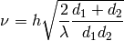
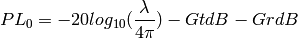

define 4 segment using the position of the rectangle
Dgrid_points(points,Px): points : Np x 2 array Px : 2 x 1 array
Dgrid_zone(zone,Px):
A zone is a quadrilateral zone.
Build the distance matrix between Tx and the zone points
Calculate the diffraction Fresnel parameter
| Parameters : | h : height (meter) d1 : distance 1 (meter) d2 : distance 2 (meter) fGHz : frequency GHz |
|---|
Notes

Distance between a point and a line
| Parameters : | point (x1,y1) :
|
|---|
| Parameters : | x1 : y1 : x2 : y2 : Obstacle : |
|---|---|
| Returns : | SS : |
check intersecton of 2 segments Parameters ———- segment 1 :
({x1,y1),(x2,y2)}
Notes
This function is implemented better in GeomUtil intersect
Calculate Loss through Layers theta=0 deg Parameters ———- S
Simulation
f
| Parameters : | L :
Pts :
f :
p :
|
|---|
Examples
>>> import matplotlib.pyplot as plt
>>> from pylayers.simul.simulem import *
>>> from pylayers.measures.mesuwb import *
>>> from pylayers.antprop.multiwall import *
>>> S = Simul()
>>> S.layout('Lstruc.str','matDB.ini','slabDB.ini')
>>> fGHz = 4
>>> Tx,Rx = ptw1()
>>> Lwo,Lwp,Edo,Edp = Loss0_v2(S.L,Tx,fGHz,Rx[1,0:2])
>>> fig,ax = S.L.showGs()
>>> tit = plt.title('test Loss0_v2')
>>> sc2 = ax.scatter(Rx[1,0],Rx[1,1],s=20,marker='x',c='k')
>>> sc1 = ax.scatter(Tx[:,0],Tx[:,1],s=Edo,c=Edo,linewidth=0)
>>> plt.show()
(Source code, png, hires.png, pdf)

Yu Lei function
| Parameters : | n : float
D : array
fGHz : array
|
|---|
Path Loss
| Parameters : | pts : array (2xNp) fGHz : frequency (GHz) p : array (2x1) n : path loss exponent |
|---|
Path Loss at frequency f @ 1m
| Parameters : | fGHz: :
GtdB: :
GrdB: :
|
|---|
Notes

Examples
>>> fGHz = 2.4
>>> PL = PL0(fGHz)
>>> assert (PL<41)&(PL>40),"something wrong"
{kind=link}
{kind=link}